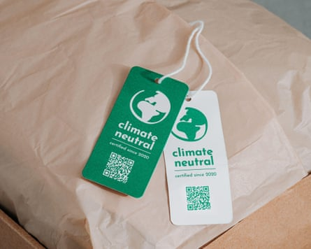
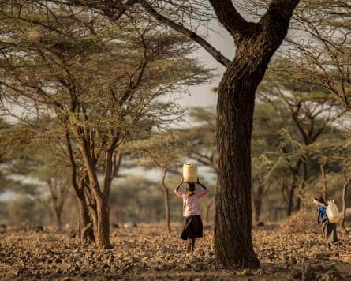

Judges across the world are proving sceptical of companies’ attempts to offset their greenhouse gas emissions by buying carbon credits, a report has found.
In an analysis of nearly 3,000 climate-related lawsuits filed around the world since 2015, the latest annual review of climate litigation by the London School of Economics found action against corporations in particular was “evolving”, with growing scrutiny of how companies plan to meet their stated climate commitments.
Dozens of legal challenges over the past decade have raised arguments related to carbon credits, and many have been successful.
Last month, Energy Australia acknowledged that carbon offsets did not prevent or undo damage caused by greenhouse gas emissions, and apologised to its customers for allegedly misleading marketing. The announcement followed a greenwashing lawsuit brought against the energy company by a group of Australian parents, which was settled out of court.
It was the first case in Australia to be brought against a company for “carbon neutral” marketing, but only one of many across the world challenging similar claims in high-emitting industries.
In October in the US, two residents of Portland, Oregon, sued the state’s largest natural gas company , NW Natural, over its “Smart Energy” offset scheme. Money from the scheme goes to methane digester projects at industrial dairy farms, which the residents say release significant amounts of greenhouse gases and therefore breach state rules prohibiting unfair and deceptive marketing claims. The company, which is also being sued by Multnomah County for allegedly sowing climate doubt, says it will defend itself “vigorously” against the allegations.
Cases such as these “focus on the integrity of carbon credits and the claims that can be made regarding the carbon emissions of a product or service when credits are purchased to ‘offset’ emissions from that product or service”, the LSE report found.
Advertising regulators have been cracking down on climate neutrality claims by companies marketing to consumers.Photograph: Panther Media GmbH/Alamy
Other lawsuits target companies and financial services that market themselves to sustainability-conscious consumers, challenging a lack of transparency or clarity.
In Germany, greenwashing lawsuits have proliferated after a judgment last year against the sweet company Katjes. The federal court of justice ruled that the company’s use of the term “climate neutral” to market its fruit gummies was ambiguous because consumers could either interpret it as a real reduction in emissions while the sweet was being made or as the company having compensated for its emissions elsewhere. Katjes had done the latter, by buying CO 2 certificates.
In future, the German court concluded, companies could only use these kinds of terms if they were properly explained within the advert itself.
These judicial decisions follow similar statements from advertising regulators and consumer protection bodies, which have been cracking down on dubious climate neutrality claims for several years.
Some cases identified by the LSE report were criminal in nature, with at least three concerning allegations of carbon credit fraud in the US in 2024. One involved a former carbon offsetting executive accused of helping to manipulate data from projects in rural Africa and Asia.
The LSE researchers said such litigation highlighted “key challenges” in the operation of voluntary carbon markets, which have been beset by revelations that many of their credits do not represent genuine carbon reductions .
Legal risks, stronger regulation of corporate activity in some parts of the world, and growing consumer awareness of the nuances of offsetting claims do seem to be influencing corporate decision-making. Analysis of company climate plans by Carbon Market Watch and the New Climate Institute showed nearly all relied heavily on offsetting in 2022, but their next Corporate Climate Responsibility Monitor report, due in July, will chart a shift away from potentially misleading claims.
“Courts will continue to play a crucial role in clarifying legal boundaries for corporate responsibility in the context of net zero commitments,” the LSE concluded.
Villagers in Isiolo county, Kenya, have contested the establishment of two conservancies within their communally owned land for an offsetting scheme.Photograph: Ami Vitale/Alamy
While greenwashing lawsuits tend to focus on claims made by companies in their most lucrative markets in the global north, courts have also become involved in disputes over whether offsetting schemes themselves – many of which are in the global south – respect the rights of local communities.
In January, a Kenyan court ruled in favour of a group of people in the northern county of Isiolo who contested the establishment of two conservancies within their communally owned land by the Northern Rangelands Trust and its associates for an offsetting scheme described as the “world’s largest soil carbon removal project” . The scheme, used by big companies including Meta, Netflix and British Airways, has long been under fire from Indigenous activists.
And in Brazil the federal public prosecutor’s office of the state of Pará recently filed a lawsuit against the federal government, the state of Pará and the Environmental Assets and Participations Company of Pará (Caapp), asking the federal court to immediately suspend and annul a contract for a massive carbon offsetting project.
It was the latest move in a bitter argument around the $180m (£132m) deal between Caapp and a company representing the Leaf Coalition of corporate and government organisations. They aimed to sell carbon credits gained from reducing deforestation in the state, under a system called Redd+ , to buyers around the world.
The LSE report found a growing body of lawsuits in which vulnerable communities or environmental groups have challenged climate mitigation or adaptation projects based on fairness, procedural deficiencies or biodiversity harm. The authors wrote: “Courts are being asked to arbitrate not only on whether governments and companies act on climate, but also how they do so.”